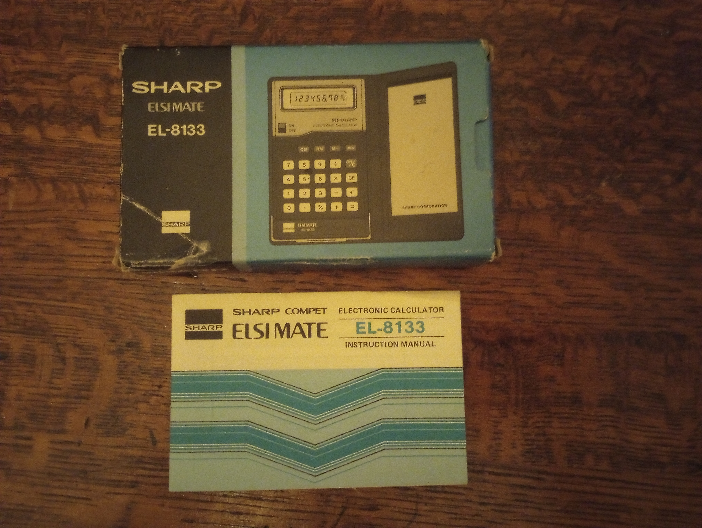
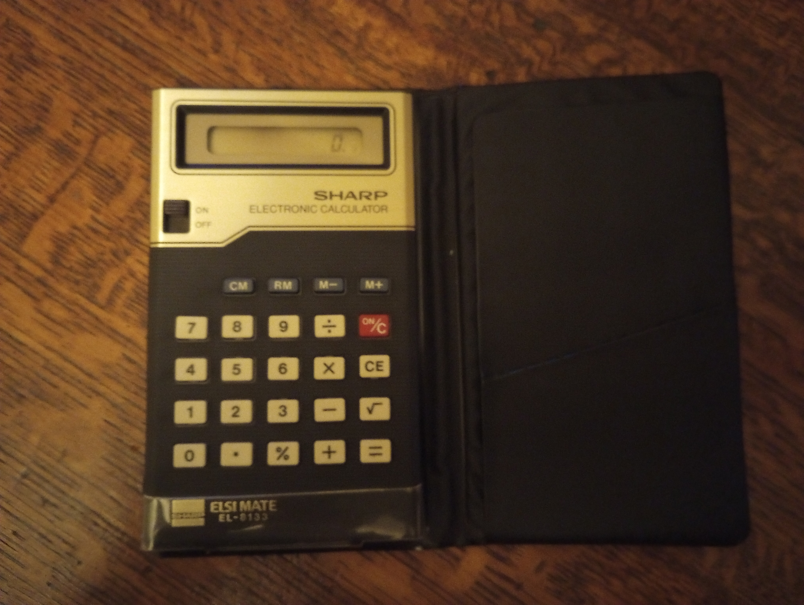

This is the Elsi Mate EL-8133!
 It is a basic 4 function calculator from 1978. I got this at the Goodwill for $3.00. Quite the steal!
This is my Casio CA-53W!

This watch has a calculator on it. It's not technically retro, but it is made to be like the ones from the 80's. Besides just being a calculator, it can also be a stop watch and a calander.